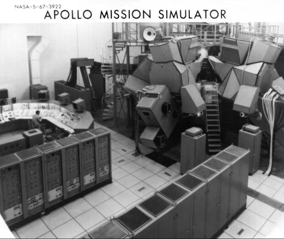
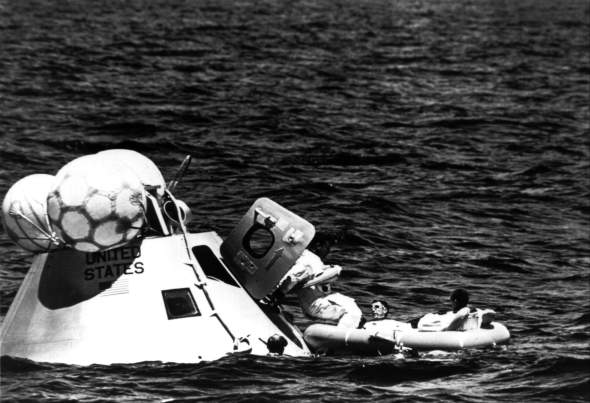
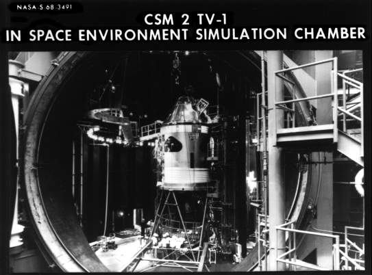

![[Previous Page]](http://www.dfrc.nasa.gov/GIF/previous.gif)
![[Next Page]](http://www.dfrc.nasa.gov/GIF/next.gif)

Early in 1961, Robert B. Voas at the Manned Spacecraft Center had written a paper on how pilots should train for a lunar mission and what they should do during the flight. Because of the hostile environment and the inability to return quickly to safety, Voas said, crews had to be prepared to stay with their ships and keep the protective systems operating. That made good sense. Moreover, since modifications were made in spacecraft systems almost until time of launch, a crew would have to follow its specific spacecraft through step-by-step testing in the factory and through preparations for flight at the launch site.
Crew tasks in flight included steering the space ship, but this was not a constant duty. Steering was needed mainly during launch, lunar maneuvers, and earth reentry and landing. Navigating the ship from the earth to the moon and back required high-speed automatic computing, during which the crew would choose data fed into the computer and verify the results on the navigation system displays. In addition, the crew would make optical sightings, orient trackers on selected stars, and navigate manually, using prepared tables and a simple computer. The astronauts would maintain a continuous check on subsystems, which meant one crewman keeping watch while the others slept. This chore might include such things as switching to a redundant system if a component failed and keeping the ground informed on mission status. During early flights, scientific activities on the moon would be limited to observing systems (a primary task of a test pilot, anyway) and conducting some medical and biological experiments. Equipment for astronomical and lunar surface studies would consist of whatever could be carried to the moon and set up fairly easily by pressure-suited astronauts. Crew positions were to be commander pilot, navigator copilot, and engineer-scientist. (In June 1967, these titles were changed to commander, command module pilot, and lunar module pilot.)* 13
In 1966, before the Apollo 204 fire, a number of astronauts were assigned to crew positions in Apollo. On 21 March, Gus Grissom, Edward White, and Roger Chaffee (backed up by James McDivitt, David Scott, and Russell Schweickart) were picked to man the first flight. On 29 September, Walter Schirra, Donn Eisele, and Walter Cunningham were named for the second flight, with backups Frank Borman, Thomas Stafford, and Michael Collins. Up to that point, keeping track of assignments was not difficult, but it soon changed. If the Grissom group circled the earth for up to 14 days, why should Schirra's crew do the same thing? So Schirra's flight was canceled in December, and his team was assigned as backup for Grissom's. McDivitt's and Borman's crews soon had new assignments. The McDivitt trio (backed by Stafford, John Young, and Eugene Cernan) drew the second flight, a complex dual mission with two launch vehicles (Saturn IBs 205 and 208) that entailed putting the command module and lunar module through maneuvers in earth orbit. Borman's threesome, with William Anders replacing Stafford (who now had a command of his own) and Charles Conrad, Richard Gordon, and Clifton Williams backing them, snared the first manned flight scheduled to be launched by a Saturn V. Borman's launch vehicle would be 503, the third in the series. At the end of 1966 this was the pilot assignment picture.14
Immediately after the fire in January 1967, Webb canceled all crew assignments. On 9 May, however, as NASA began to recover from the tragedy, he told the Senate space committee that Schirra, Eisele, and Cunningham (with Stafford, Young, and Cernan as backups) would fly the first manned Apollo mission.** Schirra's group, Webb told the senators, was on its way to the Downey plant "to start a detailed, day-by-day, month-by-month association with Block II spacecraft No. 101."15
Shortly after the Apollo 4 flight, on 20 November 1967, NASA announced the names of two more crews. McDivitt's team, with new backups Conrad, Gordon, and Alan Bean,*** would still fly the earth-orbital command and lunar module mission they had been given the previous year. The support team was Edgar Mitchell, Fred Haise, and Alfred Worden. Borman's crew again drew the high-altitude maneuvers, but the backups were now Neil Armstrong, James Lovell, and Edwin Aldrin, with a support team of Thomas Mattingly, Gerald Carr, and John Bull.16
In November 1967, therefore, flight crew appointments seemed to be be set for all of 1968 and part of 1969, but 1968 was an eventful year for men as well as machines. The major change, of course, was the proposal to attempt a lunar-orbit mission on the second manned Apollo flight. NASA planners reasoned that Borman's crew was already training for operations with the command module as far as 6,400 kilometers from the earth. The astronauts would have to stretch that distance to nearly 380,000 kilometers, but they would not have the lunar module to complicate their training. On the other hand, McDivitt's group appeared to have a tremendous task, training to put the lander through its paces for the first time.
Collins, in his book Carrying the Fire: An Astronaut's Journeys, said that Slayton asked McDivitt if he wanted to fly the circumlunar (or lunar-orbit) mission, but McDivitt turned it down. He and his crew had spent hundreds of hours learning to handle the lunar module, and he would rather not see that time wasted. The crews would have to exchange command modules, though. Spacecraft 103, on which the McDivitt team had been training, would be ready for a flight in 1968 and 104 would not. Scott complained about that, since as command module pilot he had been living with his machine and knew its characteristics well. Collins, who had been similarly occupied with 104, had other, more personal, worries.17
In the summer of 1968, two astronauts with flight assignments came up with medical problems that stimulated another rash of changes. Collins, from Borman's team, needed surgery to remove a bone spur from his spine. Lovell moved from the backup team to take over from Collins, Aldrin switched from lunar module to command module pilot on the backup team to replace Lovell, Haise shifted from the support group on McDivitt's team to backup lunar module pilot in Borman's group in place of Aldrin, and Jack Lousma joined McDivitt's support team as a substitute for Haise. So Collins' bone spur started a whole round of musical chairs in flight positions. And the game continued when Borman lost a member of his support team. Bull resigned from the corps because of a pulmonary problem, and Vance Brand filled his seat.18
Schirra's Apollo 7 group had remained intact. For almost a year, the group had stayed with the spacecraft in California. When the spacecraft moved to Florida in June 1968 for launch preparations, the crew followed. The astronauts had not devoted all their time to CSM-101, however. During the six months before launch in October 1968, they had spent nearly 600 hours in the command module simulator, operating the 725 manual controls and reacting to simulated emergencies and malfunctioning systems. They had also been in the spacecraft during an altitude chamber test, checked out the slide wire for a launch pad emergency escape test, crawled out of a model spacecraft in the Gulf of Mexico to practice recovery, listened to briefings on systems and experiments, visited the Morehead Planetarium in North Carolina and the Griffith Planetarium in California for celestial navigation training, worked with the crew systems people in getting their suits and supporting equipment ready, and studied mission plans and other documentation.19

The Apollo command module mission simulator (right) at Manned Spacecraft Center, where Apollo astronauts practiced for their missions. Another simulator was at Kennedy Space Center.
Schirra's team also received the benefit, through briefings or written reports, of the activities of other astronauts who were studying, participating in, or training on specific pieces of the Apollo systems. For example, before CSM-101 left the factory at Downey, it went through a test to make sure that its systems performed properly and in harmony. Astronaut John Young attended this session and noted that, in some instances, the computer, inverters, pumps, fans, and radios were in his opinion operated longer than was either necessary or good for the equipment. He also found that, when deficiencies were uncovered, everything stopped while discrepancy reports were written on the spot. On the positive side, however, Young thought the crew checklist for time-critical sequences was excellent. From there he went on, item by item, finally concluding "that S/C 101 is a pretty clean machine." Schirra, McDivitt, and Borman all were given copies of his report.20

Schirra, Eisele, and Cunningham (left to right) practice climbing out of the spacecraft into a life raft, to perfect recovery procedures.
The Schirra crew had practiced getting out of the spacecraft in the Gulf to simulate recovery, but Lovell, Stuart Roosa, and Charles Duke made a more extensive test to find out how they and the craft would fare if recovery were delayed as much as 48 hours. They especially wanted to see how quickly the spacecraft could right itself if it flipped over in the water with its nose down - the "stable II" position. ("Stable I" was the normal upright position.) So Lovell and the others were tossed into the water upside down. They had no trouble getting to the manual control switch that signaled three air bags to inflate and turn the ship over. During the ensuing hours, the crewmen were cool enough, but water sometimes splashed in through a postlanding air vent. They used the urine-collection hose to vacuum the water from the cabin deck and dump it overboard. All in all, they agreed, the craft was seaworthy enough for a prolonged wait until recovery.21

Command and service modules 2TV-1 in the space environment simulation chamber at Manned Spacecraft Center. Hinges for the huge door to close the chamber are at extreme left. Astronauts Kerwin, Brand, and Engle spent a week in this craft under operational space conditions in 1968.
Two days on the water might be a contingency exercise, but a week in the vacuum chamber was not. Except for weightlessness, the Space Environment Simulation Laboratory at the Manned Spacecraft Center could reproduce most of the conditions of space. In a test vehicle called "2TV-1" (which, except for some flight-qualified equipment, was identical to Schirra's CSM-101), Joseph Kerwin, Vance Brand, and Joseph Engle looked for things that might be wrong with the craft. They found the vehicle satisfactory in most respects, but they still managed to fill 14 pages with comments. They noted particularly that the water lines sweated and drops puddled on the cabin deck. Otherwise the environmental system kept them comfortable. The test group went on to discuss communications (some headsets worked fine, others did not), the rest periods (the men slept well) , the water (they advised not drinking it for two hours after chlorination), and the food (some of the package seams split). All the astronauts received copies of this paper.22
In addition to their flight training, the Apollo 7 crews had to exercise to keep physically fit, to guard themselves against illness, and to fly their T-38 jet aircraft from place to place to maintain proficiency in high-performance machines. Schirra, Eisele, and Cunningham had been doing this detailed work, with only an occasional night off to see a soccer match or some other sports event, for more than a year. CSM-101 had spent even longer getting ready for its voyage.
* There had been other names for the crew positions. In 1966, for example, when the Grissom and Schirra crews were in training, the terminology was command pilot, senior pilot, and pilot.
** An innovation for Apollo manned flights was the support crew. For Apollo 7, this would be John Swigert, Ronald Evans, and William Pogue. Perhaps their most important duty was coordinating and maintaining the Flight Data File, which included the flight plan, checklists, and mission ground rules, making sure that these were kept up to date and that the other crews were informed of changes. The support crews used the simulators to work out procedures, especially for emergency situations. Thus, when the prime and backup teams trained on the simulators, procedures were ready and they could devote their time to mastering then. In countdown tests, the support crews set up the cockpit, making sure that all switches were in the proper positions. Swigert, Evans, and Pogue also stood by during spacecraft tests on the pad, to assist the prime or backup crew to get out in case of emergency.
*** Clifton Williams, the third member of McDivitt's backup crew, had been killed in a T-38 aircraft crash on 5 October 1967 and was replaced by Bean.
13. [Robert B. Voas, STG], "Preliminary Material for the Selection and Training of Astronauts for Advanced Space Flights, for publication in Aerospace Engineering," 31 Oct. 1961; Donald K. Slayton memo, "Block II Apollo flight crew designation," 29 Nov. 1966; Col. Frank Borman to Dale D. Myers, "Crew Nomenclature," 31 May 1967; Low memo, "Apollo crewmen designations," 14 June 1967; MSC news release 66-72, 29 Sept. 1966. See also Robert R. Gilruth and L[ee] N. McMillion, "Man's Role in Apollo," Aerospace Engineering 21, no. 9 (1962): 42-48.
14. MSC, "Gemini and Apollo Crews Selected," news release 66-20, 21 March 1966; MSC release 66-72; MSC news release 66-110, 22 Dec. 1966; Michael Collins, Carrying the Fire: An Astronaut's Journeys (New York: Farrar, Strauss and Giroux, 1974), p. 267.
15. Senate Committee on Aeronautical and Space Sciences, Apollo Accident: Hearings, 8 parts, pt. 6, 90th Cong., 1st sess., 1967, pp. 463-64, 517; "Webb Names Crew For Manned Apollo," MSC Roundup, 12 May 1967; MSC release 67-22, 9 May 1967; John J. Van Bockel, telephone interview, 17 Oct. 1975; Borman to Myers, "Plan for Flight Crew Support Team Duties and Responsibilities during Spacecraft Checkout," 14 June 1967, with enc.
16. NASA, Astronautics and Aeronautics, 1967, p. 350; MSC news releases 67-67, 20 Nov., and 67-58, 5 Oct. 1967.
17. MSC, "Gen. Phillips Notes, 17 August 1968"; Collins, Carrying the Fire, pp. 296-97.
18. Collins, Carrying the Fire, p. 288; MSC news releases 68-53, 22 July, 68-54, 23 July, 68-60, 8 Aug., and 68-48, 16 July 1968; Quarterly Status Rept. no. 25, 30 Sept. 1968, p. 57.
19. NASA, Nineteenth Semiannual Report to Congress, January 1-June 30, 1968 (Washington, 1969), p. 29; Borman to Myers, "Flight Crew Participation in OCP's," 15 June 1967; JSC, Apollo Program Summary Report, JSC-09423, April 1975 (published as NASA TM-X-68725, June 1975), p. 6-1; NASA Astronauts, NASA EP-34 (Washington, October 1967), p. 40; Quarterly Status Rept. no. 25, p. 57; MSC news release 68-57, 31 July 1968; Quarterly Status Rept. no. 24, p. 1; Low to Julian Scheer, NASA Hq., 10 July 1968; Richard W. Underwood to Chief, MSC Photographic Technology Lab., MSC, "Apollo VII crew briefing for Experiments S005 and S006," 20 Sept. 1968; Warren J. North to Chief, Procurements and Contracts Div., "Sole source justification for procurement of services and utilization of the Griffith Planetarium for Apollo flight crew celestial training," 22 April 1968, with enc.; MSC, "Establishment of Crew Systems Resident Office at KSC," Announcement 68-88, 27 June 1968; Low to NASA Hq., Attn.: William C. Schneider, "Apollo 7 suit planning," 10 Aug. 1968; Richard S. Johnston to Nisson Finkelstein, 5 July 1968.
20. Kleinknecht to Scott H. Simpkinson, "Critique of spacecraft 101 integrated test (OCP-0131)," 14 May 1968, with enc., John W. Young memo for record, "Recommendations resulting from participation in OCP-0131 Integrated Systems Test in S/C 101," 29 April 1968.
21. Slayton to Dir., Flight Ops., "Crew report on 48-hour recovery test of spacecraft 007 on April 5-7 1968," 12 April 1968, with enc.
22. MSC news release 68-42, 10 June 1968; Joseph P. Kerwin, Vance D. Brand, and Joseph H. Engle memo, "Crew Report," 2 July 1968.